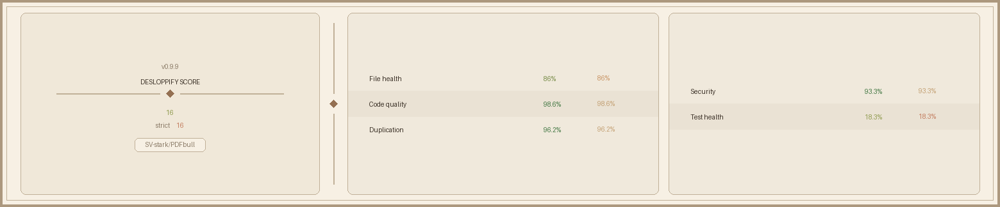

PDFbull pairs a high-performance document rendering pipeline (zpdf) with native neural OCR (rten), PKCS#12 digital signatures, geospatial GIS analysis, and 1-click Markdown / HTML5 export.
Unlike bloated PDF readers tied to legacy C++ binaries (PDFium/MuPDF), PDFbull is engineered natively in Rust for instant startup, low memory footprint, and 100% offline security.
Powered by zpdf and iced, PDFbull renders pages with sub-10ms page turn latency, smooth 60fps scrolling, and zero unsafe C/C++ DLL memory vulnerabilities.
Built-in ocrs + rten neural engine. Detects and extracts text from scanned pages offline out-of-the-box with English/Latin and Devanagari script models.
Cryptographically sign PDF documents with standard .p12 / .pfx certificates, verify signature trust chains, and overlay rubber stamps (APPROVED, CONFIDENTIAL, DRAFT).
Create new blank PDFs from scratch with DocumentBuilder, rotate pages, reorder visually in a grid, merge multiple PDFs, or split documents seamlessly.
Transform raw PDF content into structured Markdown (.md), semantic HTML5 (.html), or clean text (.txt) with full table and line hierarchy preservation.
Inspect GeoPDF /Measure dictionaries for GIS coordinate systems and inspect embedded CMYK ↔ RGB subtractive color space metrics live.
PDFbull bundles rten neural models directly to recognize scanned document pages without sending a single byte to cloud servers.
text-detection.rten (DBNet PP-OCRv4)
devanagari_PP-OCRv4_rec.rten
Compare PDFbull's resource utilization against mainstream legacy PDF software.
| Feature / Metric | PDFbull (v0.10.5) | Adobe Acrobat | Foxit Reader | Evince |
|---|---|---|---|---|
| Core Engine Language | Pure Rust (zpdf) | C / C++ | C++ (PDFium) | C (Poppler) |
| Cold Startup Time | ~120 ms | ~1,800 ms | ~850 ms | ~450 ms |
| RAM Footprint (Idle) | ~42 MB | ~350 MB | ~180 MB | ~95 MB |
| Built-in Offline OCR | Yes (rten + ocrs) | Paid Cloud / DLL | Plugin DLL | No |
| Devanagari Script OCR | Yes (Out-of-the-box) | Complex Setup | No | No |
| 1-Click Markdown / HTML Export | Yes (Native GUI) | Paid Subscription | Limited | No |
| C++ DLL Dependencies | 0 (Pure Native) | 50+ DLLs | 30+ DLLs | 15+ Shared Libs |

Free, open-source under MIT & Apache-2.0 licenses. Pre-built native binaries available for Windows, macOS, and Linux.
64-bit Native Windows Application with NSIS Installer
Version 0.10.5 • x86_64-pc-windows-msvcUniversal Binary for Apple Silicon (M1/M2/M3) & Intel Macs
Version 0.10.5 • x86_64 / aarch64Standalone AppImage & Debian / Ubuntu packages
Version 0.10.5 • x86_64-unknown-linux-gnu